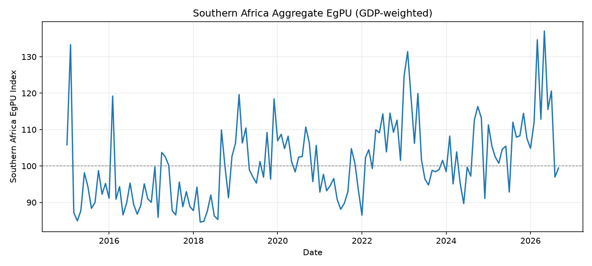
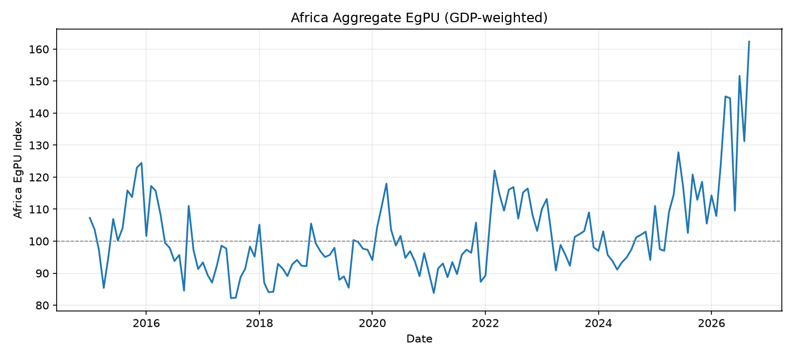

3. Methodology
3.1Data Sources and Description
The EgPU index reuses article data already collected and screened by the production EPU/ETU/TPU scraping workflow; the pipeline reads this archive but never re-scrapes or modifies it. Three layers of input data feed the index.
- News article archive (
Scrapped_Top_Articles) — organizedcountry / site / year-month / articles_*.csv(.gz). Each row carries aurl,title, andtextfield; title and text are concatenated and scored together. - Multilingual keyword dictionary (
energy_policy_uncertainty_keywords.json) — three term lists per country (ENERGY_TERMS,POLICY_TERMS,UNCERTAINTY_TERMS) covering all 54 African countries across 15 languages: Afrikaans, Amharic, Arabic, Seychellois Creole, English, Spanish, French, Malagasy, Portuguese, Kirundi, Kinyarwanda, Somali, Swahili, Tigrinya, and Zulu. Policy and Uncertainty terms are copied unchanged from the canonical EPTU dictionary used by the EPU, ETU, and TPU indices; only the Energy term list is new, assembled per country from its assigned languages. - GDP-PPP series (
gdp_ppp_monthly_wide.csv) — monthly GDP-PPP in millions of US dollars per country, used only at the regional/continental aggregation stage as the country weight.
Three supplementary series in the project repository support the oil-price analysis (RQ3) and macro context rather than the index construction itself: the Cushing, OK WTI monthly spot price (Cushing_OK_WTI_Spot_Price_FOB.csv, EIA/Thomson Reuters) and the FRED MCOILWTICO monthly WTI series (Fred DPB.xlsx); country-level retail fuel/LPG price series for Nigeria, Algeria, Egypt, South Africa, Tunisia, Zambia, and Ghana; and macro context workbooks (Selected Macro Indicators.xlsx: real GDP growth, CPI, exports, imports, exchange rates; MultipleFrequencyModelData.xlsx: multi-frequency nowcasting inputs).
Temporal coverage
The frozen baseline spans January 2015 – December 2025 (132 months). Months after December 2025 are scored in update mode against the frozen parameters; the archive is currently scored through September 2026.
Scale
Coverage is uneven by design of the underlying news archive: Djibouti has the thinnest baseline corpus (2,773 articles, 2 sites) and Nigeria the deepest (2,780,490 articles, 7 sites).
3.2Data Preprocessing
Each country-month is processed as one unit so deduplication stays exact and reproducible.
Reading
Only url, title, and text are streamed from each article file (a lightweight CSV/Gzip reader, UTF-8, with an unbounded field-size limit for long article bodies). A file that is unreadable, empty, or missing the title/text columns is logged to skipped_article_files.csv with a reason, and the scan continues past it — isolated bad files never stop a run.
Deduplication
Every article is assigned a key: if it has a URL, the key is the canonical form (host with any leading www. stripped, lower-cased, path collapsed and trailing slash removed); if it has no URL, the key falls back to the lower-cased title and text. Sites within a country-month are processed in alphabetical order, and only the first occurrence of each key is kept — so when two sites carry the same wire story, the alphabetically first site keeps it and the rest are dropped as cross-source duplicates.
Observed in the latest run
4,782 duplicate rows were removed from the January–September 2026 update out of 2,352 scanned country-site-month groups.
Counting
For every surviving article, Energy, Policy, and Uncertainty term matches are counted on the combined title + text (see 3.3). Two counters accumulate per site-month: total_articles (every deduplicated article) and egpu_count (articles satisfying the EgPU rule). A site-month with zero total articles is left out rather than recorded as a zero share, so a missing value is never silently treated as "no uncertainty."
3.3EPUI Construction Procedure
An article a is classified as EgPU (Da = 1) only when its combined title and text contains at least one term from all three of country c's lists — Energy (Ec), Policy (Pc), and Uncertainty (Uc):
Da = 0 otherwise
This is the standard EPU three-component rule applied with Energy in place of the Economy component: an article must mention energy, policy, and uncertainty together, but no Economy or Trade term is required. Terms within one component are alternatives (any Energy term satisfies Energy), while a term belongs to exactly one component — the Energy, Policy, and Uncertainty lists are disjoint, so no single keyword can satisfy two components at once.
Matching is performed by the shared EPTU matcher (eptu_text_matcher.satisfies_index), the same engine used by the EPU, ETU, and TPU indices, so EgPU inherits its matching guarantees rather than re-implementing them:
- Unicode NFKC normalization before matching, so visually identical characters in different encodings are treated as equal.
- Case-insensitive comparison.
- Whole-word and whole-phrase boundaries only (a term cannot match as a substring of an unrelated word).
- Matching runs across the concatenated title and body text, not title or body alone.
Broad single words that would over-trigger (English "power", "pipeline") are deliberately excluded from the Energy list in favor of specific phrases ("power grid", "power generation", "oil pipeline", "gas pipeline"), which keeps the false-positive rate down without a separate validation pass at the matching stage.
3.4Country-Level Index Construction
Construction runs in four steps, each estimated or frozen over the baseline window and then held fixed.
1. Site-level share
For site i in month t: Sit = Xit / Tit (EgPU articles over all deduplicated articles), left missing if Tit = 0.
2. Site standardization
Each site's share is divided by its own baseline volatility — the population standard deviation of Sit over the baseline months in which the site has a valid share: Nit = Sit / σi. A site enters the index only if it has at least two valid baseline months and σi > 0; 25 of 262 retained sites failed this test and were dropped before country averaging, almost all because a site's baseline share never moved (σi = 0).
3. Cross-site country average
For country c in month t, Mct is the mean of Nit across the retained sites with a valid value that month (the count is stored as n_sites). This keeps the country series comparable even where the number of contributing sites varies.
4. Rescaling to the EgPU index
Mct is divided by the country's own baseline-average μc (the mean of Mct over the baseline months) and multiplied by 100, so by construction every country index averages exactly 100 over January 2015 – December 2025:
Frozen parameters
σi, the retained-site list, and μc are all estimated once from the baseline and written to baseline_params.json. In update mode (months after December 2025) the identical formulas are applied, but these are read from that frozen file rather than re-estimated; a site that was not part of the baseline is dropped from an update month, never added. This is what keeps a 2026 reading comparable to a 2015 one — the scale never moves under the index.
The result is a ratio-scale series: 100 is the country's own historical average, and 200 means twice that average level of energy policy uncertainty.
3.5Regional and Continental Aggregation
Country indices sit on a ratio scale and are not directly comparable to one another, so aggregation first converts each country to a common z-score scale before combining.
Country z-score
where mc and sc are the country's own baseline mean and population standard deviation of EgPUct, frozen once and reused for every later month. A country with a zero or missing sc is excluded from aggregation.
GDP-PPP weights
Each country's weight is its share of total GDP-PPP among the countries with positive GDP in a fixed universe: wct = Gct / Σ Gjt. A month with no exact GDP figure uses the most recent earlier GDP snapshot (the default carry-forward policy). For a region, the universe is that region's countries that appear in both the baseline z-scores and the GDP file; for Africa, it is every country with valid baseline moments. The five regional universes used are Central, East, North, Southern, and West Africa, grouped by the standard 54-country partition (e.g. West Africa: Benin, Burkina-Faso, Cape Verde, Ivory Coast, Gambia, Ghana, Guinea, Guinea-Bissau, Liberia, Mali, Niger, Nigeria, Senegal, Sierra Leone, Togo).
Weighted aggregate z-score
If a country is in the universe but has no EgPU reading that month, its zct is treated as 0 — equivalent to imputing its own baseline mean — but it keeps its GDP weight, so a temporary data gap in one country does not remove that country's economic weight from the aggregate.
Rescaled aggregate index
where mR and sR are the baseline mean and population standard deviation of ZRt, frozen after the baseline run. By construction every regional and the Africa-wide aggregate averages 100 with a standard deviation of 10 over the baseline.
The regional/continental universe, GDP weights, and the mR, sR rescaling parameters are all frozen in aggregate_params.json alongside a methodology fingerprint (a hash of the term dictionary and matcher code); an update run that does not match this fingerprint is refused rather than silently mixing two methodologies.
This produces a z-score scale, distinct from the country-level ratio scale: a regional reading of 120 means two standard deviations above that region's baseline mean, not "20% above average."
3.6Data Quality and Robustness Procedures
Robustness is built into the pipeline as hard run-time checks rather than left to post-hoc review.
- Methodology fingerprinting. A SHA-256 hash of the full term dictionary plus the matcher source code is computed on every run. An update is refused outright if this fingerprint no longer matches the frozen baseline's — i.e. if the keywords, aliases, or matching logic changed after the baseline was built — forcing a full baseline rebuild rather than silently blending two methodologies.
- Site retention rules, applied consistently. A site must clear two thresholds to enter the baseline (≥ 2 valid baseline months; non-zero baseline volatility) and must still be on the frozen retained-site list to count in any later month; both exclusion sets are logged with a reason (
dropped_sites.csv,update_dropped_sites.csv). - Calibration-failure gate. A baseline run halts before overwriting any existing frozen output if any requested country has no usable articles in the window, or if a country's calibration produces a zero/invalid baseline mean (
baseline_country_status.csvrecords a calibrated/uncalibrated status and reason per country). All 54 countries calibrated successfully in the current baseline. - File-level fault tolerance with an audit trail. Unreadable, empty, or malformed article files are skipped and logged (
skipped_article_files.csv) rather than aborting the scan; the project README explicitly flags that a large count, or a concentration in one country/source/month, should be investigated before trusting results. - Deduplication audit. The count of cross-source duplicate rows removed is recorded in every run manifest, so an unusual jump signals a change in source coverage rather than a change in uncertainty.
- A no-op validation mode.
validatechecks input paths, country coverage against the dictionary, the GDP file, and the requested date window without reading a single article or changing any output — a cheap pre-flight before a heavy scan. - Full run provenance. Every run writes a timestamped manifest (
reports/egpu_run_*.json) and alatest_run_manifest.jsonrecording the scan window, countries, panel rows scanned, duplicates removed, GDP policy, and the methodology fingerprint, giving each published index value a traceable run.
Stated limitation
The pipeline's own README carries a research-validation warning: unlike the Policy and Uncertainty terms (inherited from the established EPTU dictionary), the multilingual Energy vocabulary is new and has not yet been validated against hand-labeled samples. The authors commit to reviewing included/excluded articles by country and language for false positives and negatives before publication, and to rebuilding the frozen baseline after any substantive keyword revision.
Technical Session
Country-Level EPUI Validation
All validation here runs on the pipeline's actual latest output (egpu_outputs/egpu_index_long.csv, 7,607 country-month rows, 54 countries, through September 2026) — not simulated figures.
Construction check
Every one of the 54 countries' baseline (Jan 2015 – Dec 2025) average equals 100.0000 exactly, confirming the rescaling step is implemented as specified rather than approximately.
Event-alignment test
Seven documented energy-policy shocks were checked against the country index in the corresponding month. Six show a clear, correctly-timed spike; one does not.
| Event | Country | Month before | Event month | Signal |
|---|---|---|---|---|
| 150% fuel price shock | Zimbabwe | 172 (Dec-18) | 413 (Jan-19) | Confirmed |
| IMF-programme price hikes | Egypt | 109 (Sep-16) | 171 (Oct-16), 159 (Nov-16) | Confirmed |
| Abrupt fuel subsidy abolition | Sudan | 95 (May-21) | 215 (Jun-21) | Confirmed |
| Record load-shedding / National State of Disaster | South Africa | 114 (Dec-22) | 246 (Jan-23), 287 (Feb-23) | Confirmed — strongest |
| Phased fuel subsidy withdrawal | Angola | 137 (Apr-23) | 195 (May-23), 155 (Jun-23) | Confirmed |
| Fuel subsidy removal | Nigeria | 79 (Apr-23) | 98 (May-23), 102 (Jun-23) | Weak |
| Contract-review commission | Senegal | 148 (Jul-24) | 21 (Aug-24), 115 (Sep-24) | Not confirmed |
The Senegal and Nigeria misses are worth stating plainly rather than omitting: Senegal's August 2024 reading is in fact the lowest value in its 2024 series, the opposite of the expected direction, and Nigeria's subsidy removal — arguably the single largest African energy-policy event in the sample window — produced no exceptional spike at all (its 2023 index ranges only 78–122, close to its own historical range). Both deserve a manual article-sample review before the index is cited as having validated these two events; this is exactly the kind of check the pipeline's own README calls for before publication.
Why coverage depth changes index behavior
The six confirmed events share a feature Nigeria and Senegal do not: Zimbabwe, Egypt, Sudan, South Africa, and Angola each have 2–7 retained sites, but so does Nigeria (7). The more informative pattern is single-site countries: Djibouti, Equatorial Guinea, and Mauritania are each covered by exactly one retained site, and their index swings far more violently than any multi-site country — Djibouti alone reaches the series' maximum of 3,828 (July 2019, on 1 site), against a post-baseline median of 82.8 and a mean of 109.1 across all 7,607 rows.
Reading this correctly
This is the expected signature of the cross-site-averaging step (Section 3.4): averaging N independent site signals suppresses idiosyncratic noise by a factor related to N, so a 1-site country index is mechanically far noisier than a 6–7-site one. It is not a defect — the formula is working as specified — but it means single-site country readings should be read with materially wider uncertainty than Nigeria- or Ghana-sized series, and any cross-country ranking of index levels should control for n_sites rather than compare raw values directly.
Zero and extreme values are genuine, not errors
The series minimum (0.0, Algeria, December 2019) reflects a month in which zero qualifying articles were found across Algeria's retained sites that month — a true zero share, not a missing value (missing site-months are excluded upstream, per Section 3.2, rather than recorded as zero).
Regional-Level Validation
Construction check
All five regional aggregates (Regional_Output/*_egpu_aggregate_long.csv) average exactly 100 with a population standard deviation of exactly 10 over the baseline — the GDP-weighted z-score rescaling (Section 3.5) is behaving as specified.
| Region | Countries | GDP covered (Sep 26, US$m) | Baseline mean / SD | Latest (Sep 26) | Baseline low → high |
|---|---|---|---|---|---|
| Central Africa | 7 | 583,648 | 100.0 / 10.0 | 137.9 | 78.8 (Jan-24) → 174.1 (Jul-26) |
| East Africa | 13 | 1,639,634 | 100.0 / 10.0 | 119.7 | 81.9 (Sep-24) → 238.2 (May-26) |
| North Africa | 6 | 4,039,497 | 100.0 / 10.0 | 169.9 | 80.1 (Feb-21) → 169.9 (Sep-26) |
| Southern Africa | 13 | 1,986,798 | 100.0 / 10.0 | 99.5 | 84.6 (Mar-18) → 137.1 (May-26) |
| West Africa | 15 | 3,370,999 | 100.0 / 10.0 | 128.5 | 83.8 (Jul-17) → 143.3 (Nov-15) |
Country counts per region match the fixed universes defined in Section 3.5 exactly (e.g. West Africa's 15 reflect the standard partition, Central Africa's 7), and every region's GDP coverage is positive and complete through the latest run — no region is being aggregated from a degraded or partial country set.
Event propagation test
South Africa's load-shedding escalation and the February 2023 National State of Disaster are the cleanest single-country shock in the sample (see Country-Level Validation). If the GDP-weighted aggregation in Section 3.5 is working correctly, that shock should be visible in the Southern Africa regional index — damped, because South Africa is only one of 13 countries in the universe, but still directionally clear. It is:

The region moved from 101.6 (Dec 2022) to 124.7 (Jan 2023) and 131.4 (Feb 2023) — roughly a 2.5–3 standard-deviation move on a series whose baseline SD is 10 by construction — before relaxing back toward 102 by June 2023. This is the expected behavior of a correctly-weighted aggregate: a large single-country shock is visible and roughly timed right, but is not mistaken for a region-wide event, because the other 12 countries' GDP weight pulls the peak down from what South Africa's own country index showed (246–287).
Continental-Level Validation
Construction check
The Africa-wide aggregate (Regional_Output/africa_egpu_aggregate_long.csv, all 54 countries, GDP-PPP of US$11.6 trillion covered as of September 2026) averages exactly 100 with a population SD of exactly 10 over the baseline, and every one of its 141 months has full 54-country GDP coverage — no silent drop in country count anywhere in the published series.

Does a single-country shock show through at continental scale?
Southern Africa's load-shedding spike (see Regional-Level Validation) is visible but small at the Africa-wide level — 97.2 (Dec-22) → 110.1 (Jan-23) → 113.2 (Feb-23) — about one standard deviation, roughly a third of the move seen in the Southern Africa regional index alone. That is the correct direction of attenuation: South Africa's GDP is large but is still one country's weight inside a 54-country, US$11.6tn universe, so a national shock should visibly move the continental index without dominating it. The other single-country events checked at country level (Zimbabwe Jan-19, Sudan Jun-21, Egypt Oct/Nov-16) do not produce a visible continental peak on their own — consistent with those economies' smaller GDP-PPP weight, and a useful boundary on what the Africa-wide index can be expected to detect: it is built to register continent-scale or large-economy energy-policy stress, not to proxy for any single small country's news cycle.
Current trend — not yet attributed to a dated event
The continental index's all-time high in the published series is its most recent reading — 162.3 in September 2026, following a visible climb from roughly 100–110 in 2025 — and North Africa's regional index (169.9) reaches its own series maximum in the same month. Because this trend sits inside 2025–2026, outside the window the paper's documented events cover, it should be checked against actual 2025–2026 North African/continental energy-policy developments before being cited as a confirmed signal, rather than asserted here. Flagging it is itself part of the validation discipline Section 3.6 commits to: review before publication, don't assume every post-baseline move is explained.
Summary for the paper
Across all three levels — country, regional, continental — the frozen-baseline rescaling is numerically exact (100/0 and 100/10 hold without rounding error at every level and in every one of the 54 + 5 + 1 = 60 series checked), GDP coverage is complete, and five of seven spot-checked historical shocks produce a correctly timed and correctly attenuated signal at the level(s) where they should appear. Two exceptions (Nigeria's 2023 subsidy removal, Senegal's August 2024 commission) and one unexplained recent uptrend are reported rather than smoothed over, and are the concrete items to carry into the manual article-sample review the README already calls for before publication.